Provides methods for matrix shading, i.e., displaying a color image for
matrix (including correlation matrices and data frames) and dist objects given an
optional permutation. The plot arranges colored rectangles to represent the
values in the matrix. This visualization is also know as a heatmap.
Implementations based on the
grid graphics engine and based n ggplot2 are provided.
Usage
pimage(x, order = FALSE, ...)
# S3 method for class 'matrix'
pimage(
x,
order = FALSE,
col = NULL,
main = "",
xlab = "",
ylab = "",
zlim = NULL,
key = TRUE,
keylab = "",
symkey = TRUE,
upper_tri = TRUE,
lower_tri = TRUE,
diag = TRUE,
row_labels = NULL,
col_labels = NULL,
prop = isSymmetric(x),
flip_axes = FALSE,
reverse_columns = FALSE,
...,
newpage = TRUE,
pop = TRUE,
gp = NULL
)
# S3 method for class 'table'
pimage(x, order = NULL, ...)
# S3 method for class 'data.frame'
pimage(x, order = NULL, ...)
# S3 method for class 'dist'
pimage(
x,
order = NULL,
col = NULL,
main = "",
xlab = "",
ylab = "",
zlim = NULL,
key = TRUE,
keylab = "",
symkey = TRUE,
upper_tri = TRUE,
lower_tri = TRUE,
diag = TRUE,
row_labels = NULL,
col_labels = NULL,
prop = TRUE,
flip_axes = FALSE,
reverse_columns = FALSE,
...,
newpage = TRUE,
pop = TRUE,
gp = NULL
)
ggpimage(x, order = NULL, ...)
# S3 method for class 'matrix'
ggpimage(
x,
order = NULL,
zlim = NULL,
upper_tri = TRUE,
lower_tri = TRUE,
diag = TRUE,
row_labels = NULL,
col_labels = NULL,
prop = isSymmetric(x),
flip_axes = FALSE,
reverse_columns = FALSE,
...
)
# S3 method for class 'dist'
ggpimage(
x,
order = NULL,
zlim = NULL,
upper_tri = TRUE,
lower_tri = TRUE,
diag = TRUE,
row_labels = NULL,
col_labels = NULL,
prop = TRUE,
flip_axes = FALSE,
reverse_columns = FALSE,
...
)Arguments
- x
a matrix, a data.frame, or an object of class
dist.- order
a logical where
FALSEmeans no reordering andTRUEapplies a permutation using the default seriation method for the type ofx. Alternatively, the name of a seriation method or any object that can be coerced to classser_permutationcan be supplied.- ...
if
orderis the name of a seriation method then further arguments are passed on to the seriation method, otherwise they are ignored.- col
a list of colors used. If
NULL, a gray scale is used (for matrix larger values are displayed darker and fordistsmaller distances are darker). For matrices containing logical data, black and white is used. For matrices containing negative values a symmetric diverging color palette is used.- main
plot title.
- xlab, ylab
labels for the x and y axes.
- zlim
vector with two elements giving the range (min, max) for representing the values in the matrix.
- key
logical; add a color key? No key is available for logical matrices.
- keylab
string plotted next to the color key.
- symkey
logical; if
xcontains negative values, should the color palate be symmetric (zero is in the middle)?- upper_tri, lower_tri, diag
a logical indicating whether to show the upper triangle, the lower triangle or the diagonal of the (distance) matrix.
- row_labels, col_labels
a logical indicating if row and column labels in
xshould be displayed. IfNULLthen labels are displayed if thexcontains the appropriate dimname and the number of labels is 25 or less. A character vector of the appropriate length with labels can also be supplied.- prop
logical; change the aspect ratio so cells in the image have a equal width and height.
- flip_axes
logical; exchange rows and columns for plotting.
- reverse_columns
logical; revers the order of how the columns are displayed.
- newpage, pop, gp
Start plot on a new page, pop the viewports after plotting, and use the supplied
gparobject (see grid).
Details
Plots a matrix in its original row and column orientation (image in stats reverses the rows). This means, in a plot the columns become the x-coordinates and the rows the y-coordinates (in reverse order).
Grid-based plot: The viewports used for plotting are called:
"plot", "image" and "colorkey". Use grid functions
to manipulate the plots (see Examples section).
ggplot2-based plot: A ggplot2 object is returned. Colors, axis limits
and other visual aspects can be added using standard ggplot2 functions
(labs, scale_fill_continuous, labs, etc.).
See also
Other plots:
VAT(),
bertinplot(),
dissplot(),
hmap(),
palette
Examples
set.seed(1234)
data(iris)
x <- as.matrix(iris[sample(nrow(iris), 20) , -5])
pimage(x)
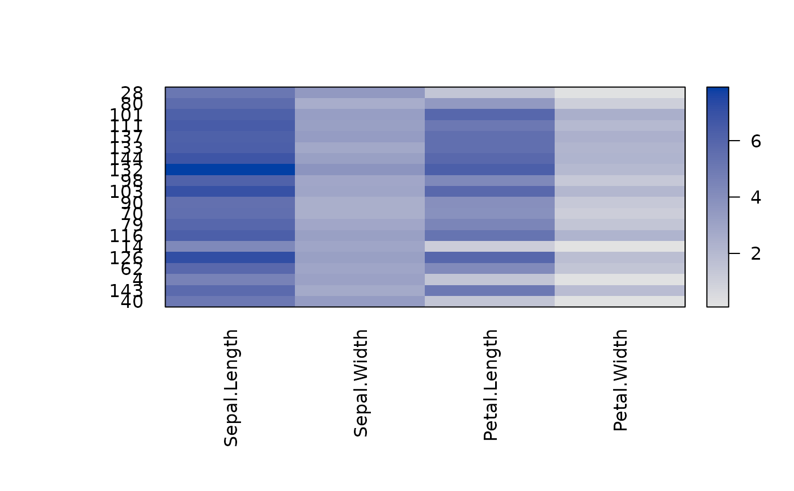
# Show all labels and flip axes, reverse columns, or change colors
pimage(x, prop = TRUE)
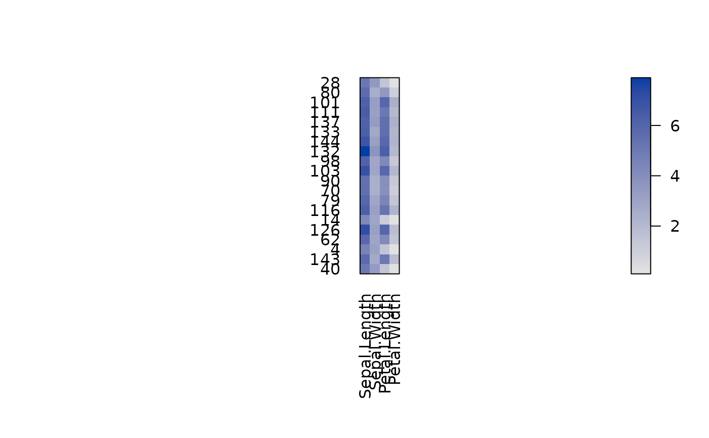
pimage(x, flip_axes = TRUE)
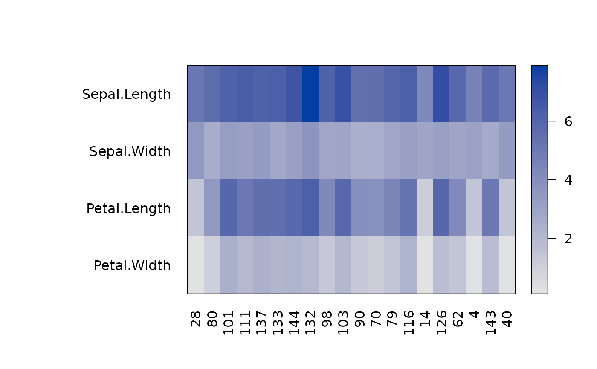
pimage(x, reverse_columns = TRUE)
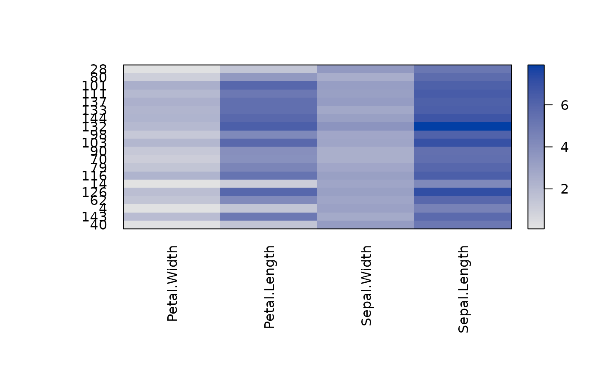
pimage(x, col = grays(100))
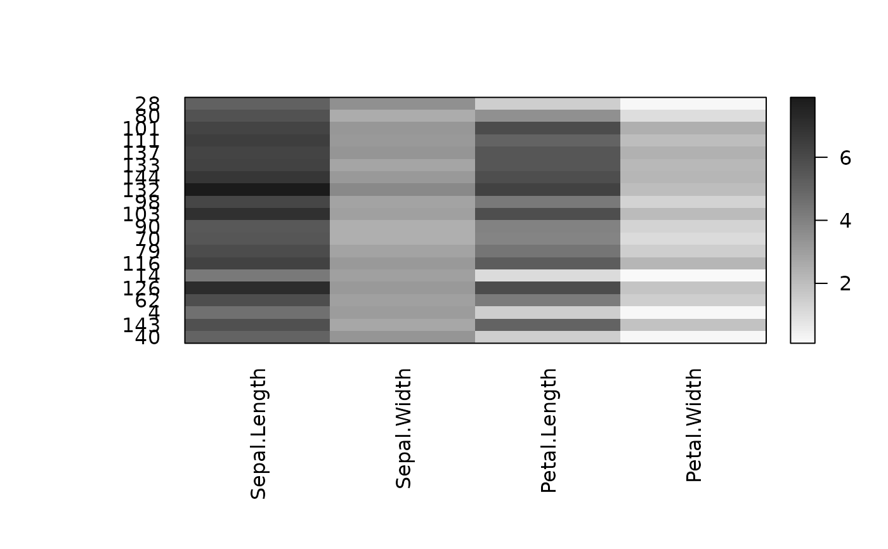
# A matrix with positive and negative values
x_scaled <- scale(x)
pimage(x_scaled)
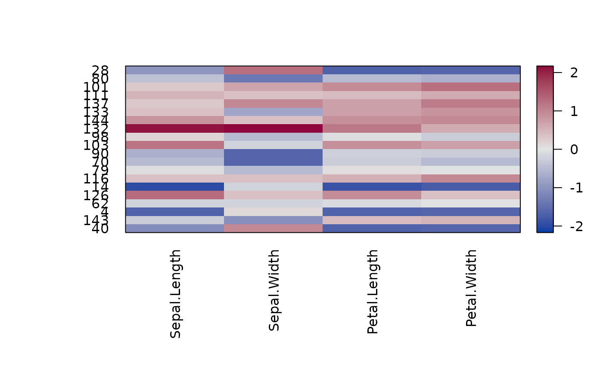
# Use reordering
pimage(x_scaled, order = TRUE)
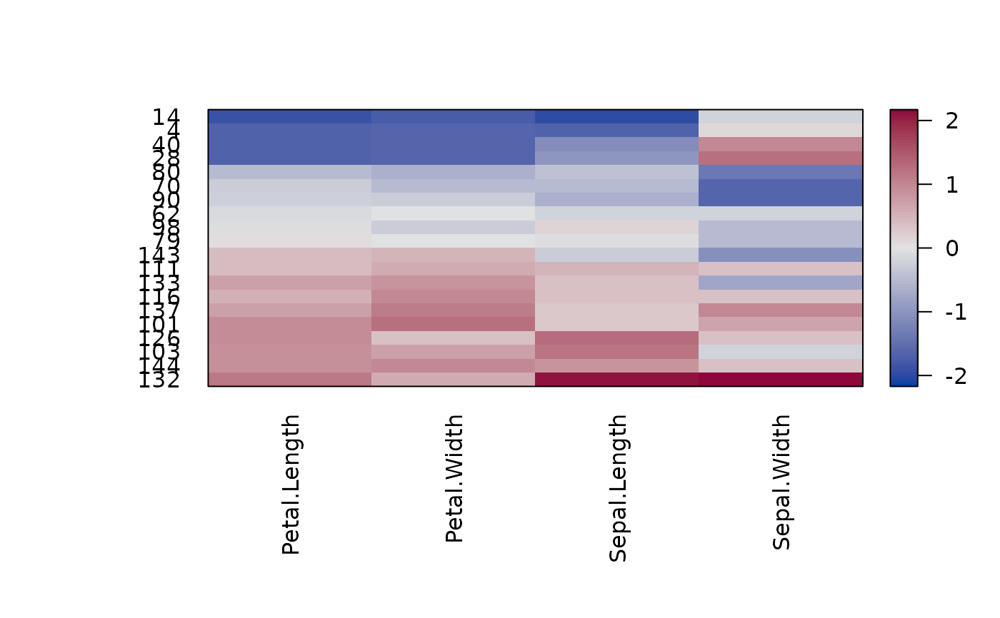
pimage(x_scaled, order = "Heatmap")
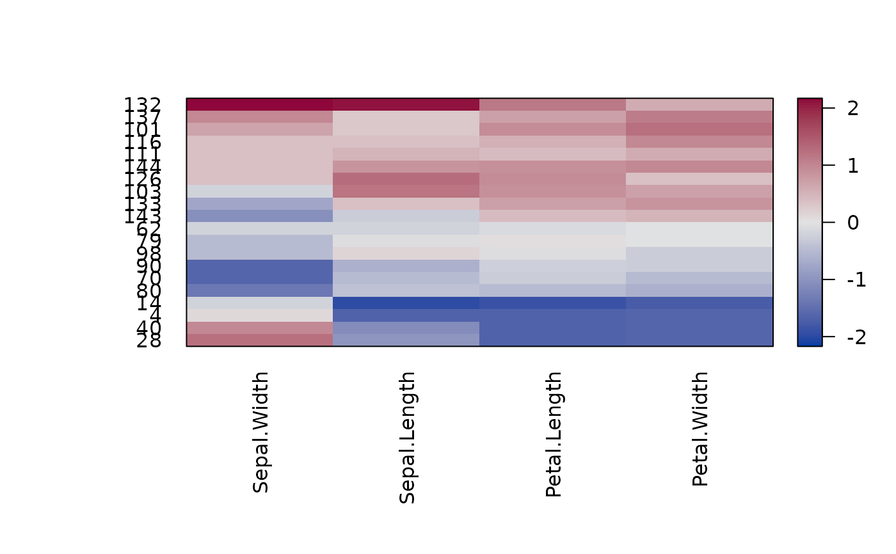
## Example: Distance Matrix
# Show a reordered distance matrix (distances between rows).
# Dark means low distance. The aspect ratio is automatically fixed to 1:1
# using prop = TRUE
d <- dist(x)
pimage(d)
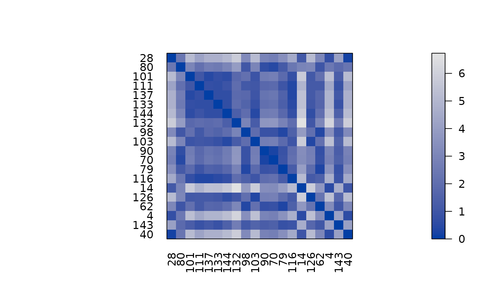
pimage(d, order = TRUE)
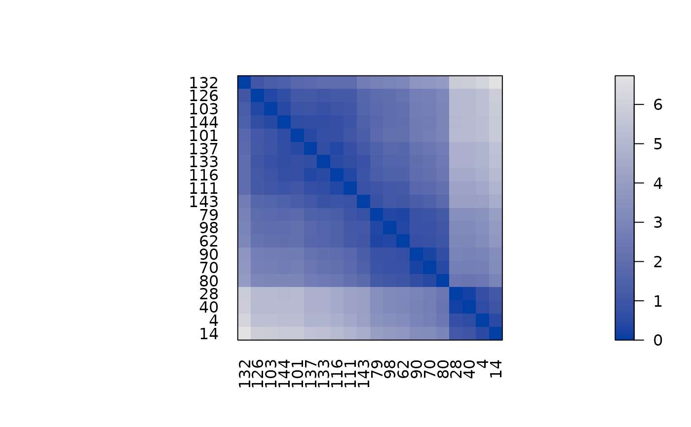
# Suppress the upper triangle and diagonal
pimage(d, order = TRUE, upper_tri = FALSE, diag = FALSE)
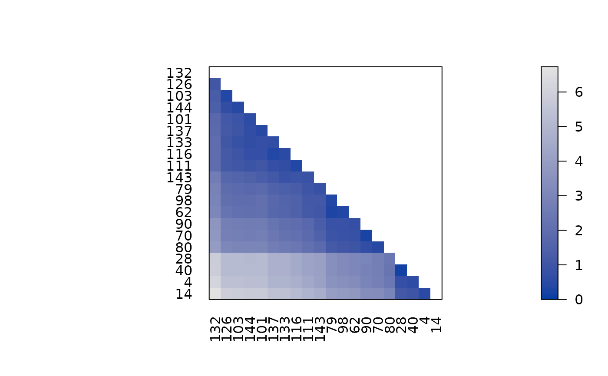
# Show only distances that are smaller than 2 using limits on z.
pimage(d, order = TRUE, zlim = c(0, 3))
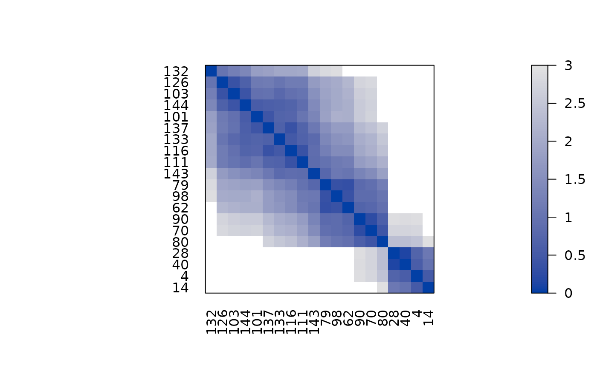
## Example: Correlation Matrix
# we calculate correlation between rows and seriate the matrix
# and seriate by converting the correlations into distances.
# pimage reorders then rows and columns with c(o, o).
r <- cor(t(x))
o <- seriate(as.dist(sqrt(1 - r)))
pimage(r, order = c(o, o),
upper_tri = FALSE, diag = FALSE,
zlim = c(-1, 1),
reverse_columns = TRUE,
main = "Correlation matrix")
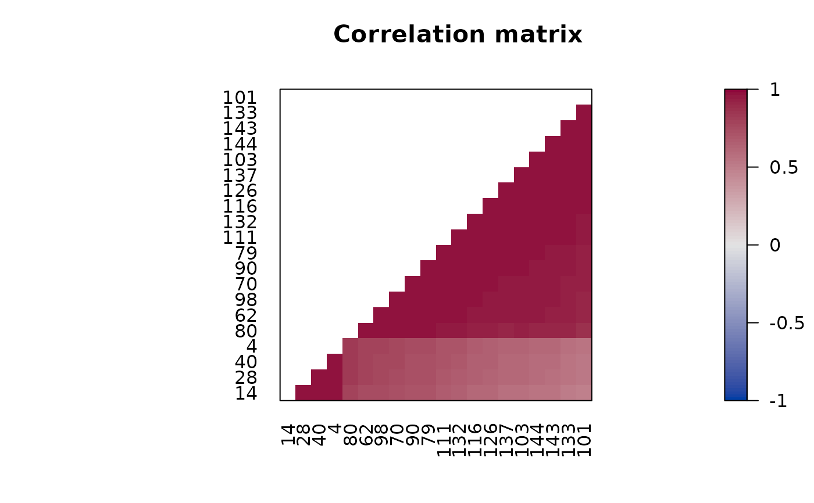
# Add to the plot using functions in package grid
# Note: pop = FALSE allows us to manipulate viewports
library("grid")
pimage(x, order = TRUE, pop = FALSE)
# available viewports are: "main", "colorkey", "plot", "image"
current.vpTree()
#> viewport[ROOT]->(viewport[GRID.VP.314]->(viewport[main], viewport[GRID.VP.315]->(viewport[GRID.VP.316]->(viewport[colorkey]->(viewport[colorkey]), viewport[plot]->(viewport[image])))))
# Highlight cell 2/2 with a red arrow
# Note: columns are x and rows are y.
downViewport(name = "image")
grid.lines(x = c(1, 2), y = c(-1, 2), arrow = arrow(),
default.units = "native", gp = gpar(col = "red", lwd = 3))
# add a red box around the first 4 rows of the 2nd column
grid.rect(x = 1 + .5 , y = 4 + .5, width = 1, height = 4,
hjust = 0, vjust = 1,
default.units = "native", gp = gpar(col = "red", lwd = 3, fill = NA))
## remove the viewports
popViewport(0)
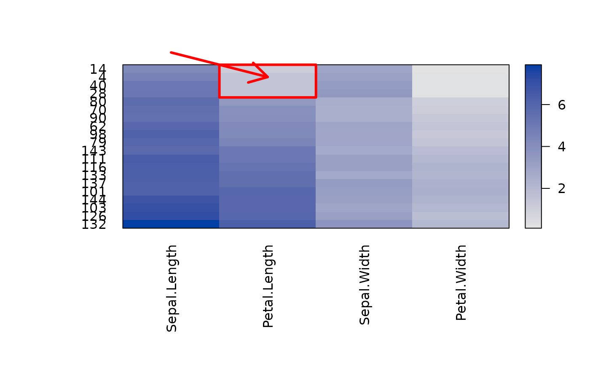
## put several pimages on a page (use grid viewports and newpage = FALSE)
# set up grid layout
library(grid)
grid.newpage()
top_vp <- viewport(layout = grid.layout(nrow = 1, ncol = 2,
widths = unit(c(.4, .6), units = "npc")))
col1_vp <- viewport(layout.pos.row = 1, layout.pos.col = 1, name = "col1_vp")
col2_vp <- viewport(layout.pos.row = 1, layout.pos.col = 2, name = "col2_vp")
splot <- vpTree(top_vp, vpList(col1_vp, col2_vp))
pushViewport(splot)
seekViewport("col1_vp")
o <- seriate(d)
pimage(x, c(o, NA), col_labels = FALSE, main = "Data",
newpage = FALSE)
seekViewport("col2_vp")
## add the reordered dissimilarity matrix for rows
pimage(d, o, main = "Distances",
newpage = FALSE)
popViewport(0)
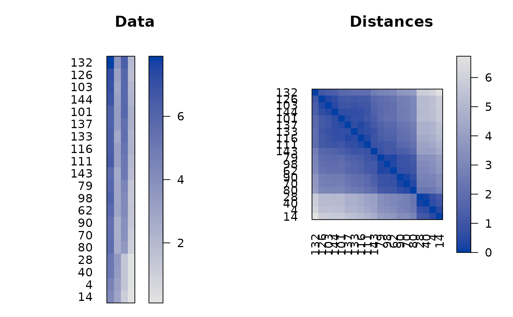
##-------------------------------------------------------------
## ggplot2 Examples
if (require("ggplot2")) {
library("ggplot2")
set.seed(1234)
data(iris)
x <- as.matrix(iris[sample(nrow(iris), 20) , -5])
ggpimage(x)
# Show all labels and flip axes, reverse columns
ggpimage(x, prop = TRUE)
ggpimage(x, flip_axes = TRUE)
ggpimage(x, reverse_columns = TRUE)
# A matrix with positive and negative values
x_scaled <- scale(x)
ggpimage(x_scaled)
# Use reordering
ggpimage(x_scaled, order = TRUE)
ggpimage(x_scaled, order = "Heatmap")
## Example: Distance Matrix
# Show a reordered distance matrix (distances between rows).
# Dark means low distance. The aspect ratio is automatically fixed to 1:1
# using prop = TRUE
d <- dist(x)
ggpimage(d)
ggpimage(d, order = TRUE)
# Suppress the upper triangle and diagonal
ggpimage(d, order = TRUE, upper_tri = FALSE, diag = FALSE)
# Show only distances that are smaller than 2 using limits on z.
ggpimage(d, order = TRUE, zlim = c(0, 2))
## Example: Correlation Matrix
# we calculate correlation between rows and seriate the matrix
r <- cor(t(x))
o <- seriate(as.dist(sqrt(1 - r)))
ggpimage(r, order = c(o, o),
upper_tri = FALSE, diag = FALSE,
zlim = c(-1, 1),
reverse_columns = TRUE) + labs(title = "Correlation matrix")
## Example: Custom themes and colors
# Reorder matrix, use custom colors, add a title,
# and hide colorkey.
ggpimage(x) +
theme(legend.position = "none") +
labs(title = "Random Data") + xlab("Variables")
# Add lines
ggpimage(x) +
geom_hline(yintercept = seq(0, nrow(x)) + .5) +
geom_vline(xintercept = seq(0, ncol(x)) + .5)
# Use ggplot2 themes with theme_set
old_theme <- theme_set(theme_linedraw())
ggpimage(d)
theme_set(old_theme)
# Use custom color palettes: Gray scale, Colorbrewer (provided in ggplot2) and colorspace
ggpimage(d, order = seriate(d), upper_tri = FALSE) +
scale_fill_gradient(low = "black", high = "white", na.value = "white")
ggpimage(d, order = seriate(d), upper_tri = FALSE) +
scale_fill_distiller(palette = "Spectral", direction = +1, na.value = "white")
ggpimage(d, order = seriate(d), upper_tri = FALSE) +
colorspace::scale_fill_continuous_sequential("Reds", rev = FALSE, na.value = "white")
}
#> Scale for fill is already present.
#> Adding another scale for fill, which will replace the existing scale.
#> Scale for fill is already present.
#> Adding another scale for fill, which will replace the existing scale.
#> Scale for fill is already present.
#> Adding another scale for fill, which will replace the existing scale.
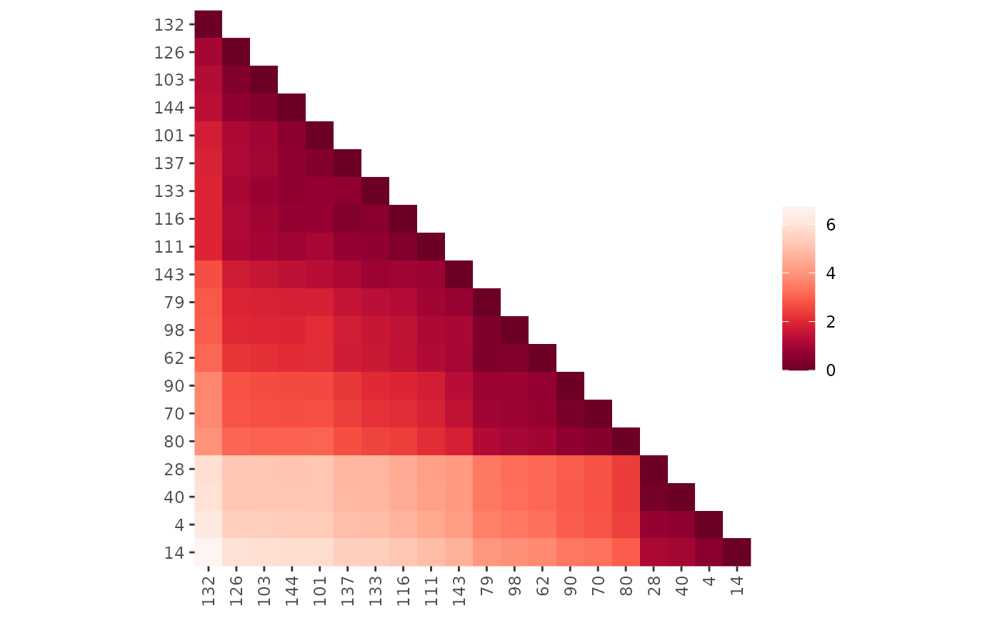